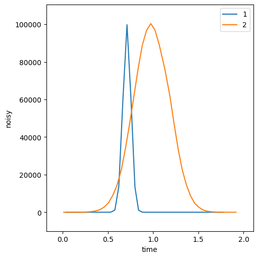
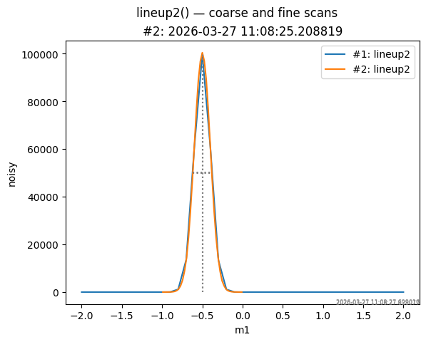

The lineup2() plan — align an axis with a signal#
The apstools.plans.lineup2() plan aligns a mover (axis) to the peak
of a detector signal. It scans mover over a relative range, computes
peak statistics using numpy, and moves the mover to the chosen
statistical feature (default: "centroid"). If nscans > 1
(default: 2), a second, finer scan is run centred on the result of
the first.
Unlike the older, deprecated lineup() plan, lineup2():
does not require a
BestEffortCallback,works in the queueserver, Jupyter notebooks, and IPython consoles,
writes peak statistics as a named bluesky stream (
"signal_stats"by default) before the run closes, so they are available in the data catalog immediately after each scan.
This notebook uses only simulated (software-only) devices — no EPICS hardware is required.
Setup#
%matplotlib inline
import warnings
warnings.filterwarnings("ignore", category=FutureWarning)
import databroker
from bluesky import RunEngine
from bluesky.callbacks import best_effort
from ophyd.sim import SynGauss
from ophyd import SoftPositioner
from apstools.plans import lineup2
cat = databroker.temp()
RE = RunEngine({})
RE.subscribe(cat.v1.insert)
bec = best_effort.BestEffortCallback()
RE.subscribe(bec)
1
Create a simulated mover and a Gaussian detector signal centred at x = -0.5.
m1 = SoftPositioner(name="m1", init_pos=0.0)
noisy = SynGauss(
"noisy",
m1,
"m1",
center=-0.5,
Imax=1e5,
sigma=0.1,
noise="poisson",
)
noisy.kind = "hinted"
Run lineup2()#
Scan m1 over ±2 around its current position with 41 points and two
passes. Peak statistics are printed after each pass and are also
written as the "signal_stats" bluesky stream before the run closes.
RE(lineup2([noisy], m1, -2, 2, 41))
Transient Scan ID: 1 Time: 2026-03-27 11:08:23
Persistent Unique Scan ID: '36cb71fa-7b53-4df6-8cc6-a50941f7c8a5'
New stream: 'primary'
+-----------+------------+------------+
| seq_num | time | noisy |
+-----------+------------+------------+
| 1 | 11:08:23.2 | 0 |
| 2 | 11:08:23.3 | 0 |
| 3 | 11:08:23.3 | 0 |
| 4 | 11:08:23.3 | 0 |
| 5 | 11:08:23.4 | 0 |
| 6 | 11:08:23.4 | 0 |
| 7 | 11:08:23.5 | 0 |
| 8 | 11:08:23.5 | 0 |
| 9 | 11:08:23.6 | 0 |
| 10 | 11:08:23.6 | 0 |
| 11 | 11:08:23.6 | 0 |
| 12 | 11:08:23.7 | 33 |
| 13 | 11:08:23.7 | 1154 |
| 14 | 11:08:23.8 | 13617 |
| 15 | 11:08:23.8 | 60446 |
| 16 | 11:08:23.9 | 99782 |
| 17 | 11:08:23.9 | 60687 |
| 18 | 11:08:24.0 | 13381 |
| 19 | 11:08:24.0 | 1103 |
| 20 | 11:08:24.0 | 35 |
| 21 | 11:08:24.1 | 0 |
| 22 | 11:08:24.1 | 0 |
| 23 | 11:08:24.2 | 0 |
| 24 | 11:08:24.2 | 0 |
| 25 | 11:08:24.2 | 0 |
| 26 | 11:08:24.3 | 0 |
| 27 | 11:08:24.3 | 0 |
| 28 | 11:08:24.4 | 0 |
| 29 | 11:08:24.4 | 0 |
| 30 | 11:08:24.5 | 0 |
| 31 | 11:08:24.5 | 0 |
| 32 | 11:08:24.5 | 0 |
| 33 | 11:08:24.6 | 0 |
| 34 | 11:08:24.6 | 0 |
| 35 | 11:08:24.7 | 0 |
| 36 | 11:08:24.7 | 0 |
| 37 | 11:08:24.8 | 0 |
| 38 | 11:08:24.8 | 0 |
| 39 | 11:08:24.8 | 0 |
| 40 | 11:08:24.9 | 0 |
| 41 | 11:08:24.9 | 0 |
New stream: 'signal_stats'
+-----------+------------+------------+
Plan lineup2 ['36cb71fa'] (scan num: 1)
Motor: 'm1' Detector: 'noisy' Feature: 'centroid'
========== ======================
statistic value
========== ======================
n 41
centroid -0.5001502569553784
x_at_max_y -0.5
fwhm 0.2453610814405645
variance 0.010011486466238052
sigma 0.10005741584829209
min_x -2.0
mean_x 1.0831444142684454e-16
max_x 2.0
min_y 0
mean_y 6103.365853658536
max_y 99782
========== ======================
m1 moved to centroid: -0.5001502569553784
Transient Scan ID: 2 Time: 2026-03-27 11:08:25
Persistent Unique Scan ID: '4cd1e16c-301e-431f-88b6-c8bca8fda6b6'
New stream: 'primary'
+-----------+------------+------------+
| seq_num | time | noisy |
+-----------+------------+------------+
| 1 | 11:08:25.2 | 0 |
| 2 | 11:08:25.2 | 4 |
| 3 | 11:08:25.3 | 8 |
| 4 | 11:08:25.3 | 21 |
| 5 | 11:08:25.4 | 41 |
| 6 | 11:08:25.4 | 106 |
| 7 | 11:08:25.5 | 266 |
| 8 | 11:08:25.5 | 612 |
| 9 | 11:08:25.6 | 1280 |
| 10 | 11:08:25.6 | 2671 |
| 11 | 11:08:25.7 | 4996 |
| 12 | 11:08:25.7 | 8837 |
| 13 | 11:08:25.8 | 14331 |
| 14 | 11:08:25.8 | 22751 |
| 15 | 11:08:25.9 | 34167 |
| 16 | 11:08:25.9 | 47339 |
| 17 | 11:08:25.9 | 61833 |
| 18 | 11:08:26.0 | 76316 |
| 19 | 11:08:26.0 | 88850 |
| 20 | 11:08:26.1 | 96750 |
| 21 | 11:08:26.1 | 100382 |
| 22 | 11:08:26.2 | 96945 |
| 23 | 11:08:26.2 | 89043 |
| 24 | 11:08:26.3 | 76557 |
| 25 | 11:08:26.3 | 61925 |
| 26 | 11:08:26.4 | 47149 |
| 27 | 11:08:26.4 | 33712 |
| 28 | 11:08:26.5 | 22614 |
| 29 | 11:08:26.5 | 14654 |
| 30 | 11:08:26.6 | 8755 |
| 31 | 11:08:26.6 | 4780 |
| 32 | 11:08:26.7 | 2691 |
| 33 | 11:08:26.7 | 1256 |
| 34 | 11:08:26.8 | 584 |
| 35 | 11:08:26.8 | 286 |
| 36 | 11:08:26.8 | 116 |
| 37 | 11:08:26.9 | 44 |
| 38 | 11:08:26.9 | 34 |
| 39 | 11:08:27.0 | 9 |
| 40 | 11:08:27.0 | 1 |
| 41 | 11:08:27.1 | 2 |
New stream: 'signal_stats'
+-----------+------------+------------+
Plan lineup2 ['4cd1e16c'] (scan num: 2)
Motor: 'm1' Detector: 'noisy' Feature: 'centroid'
========== =====================
statistic value
========== =====================
n 41
centroid -0.5002225420758496
x_at_max_y -0.5001502569553784
fwhm 0.23548172867948947
variance 0.009987929441983073
sigma 0.09993962898661908
min_x -0.9908724198365074
mean_x -0.5001502569553784
max_x -0.009428094074249382
min_y 0
mean_y 24944.341463414636
max_y 100382
========== =====================
m1 moved to centroid: -0.5002225420758496
('36cb71fa-7b53-4df6-8cc6-a50941f7c8a5',
'4cd1e16c-301e-431f-88b6-c8bca8fda6b6')

Plot#
Use apstools.utils.plotxy() to overlay both scans. The coarse first
scan (wide range) and the fine second scan (narrow range, centred on
the result of the first) are plotted together. Centroid and FWHM
markers are added automatically when stats=True (the default).
from apstools.utils import plotxy
# Plot the coarse scan first, then overlay the fine scan.
plotxy(cat.v2[-2], "m1", "noisy", title="lineup2() — coarse and fine scans")
plotxy(cat.v2[-1], "m1", "noisy", append=True);

Inspect the signal_stats stream#
Because lineup2() writes peak statistics into the "signal_stats"
stream before each run closes, they are immediately available from the
catalog. The most recent run’s statistics can be read like any other
bluesky stream:
run = cat.v2[-1]
run.signal_stats.read()
<xarray.Dataset> Size: 201B
Dimensions: (time: 1)
Coordinates:
* time (time) float64 8B 1.775e+09
Data variables: (12/25)
lineup2_signal_stats_max_x (time) float64 8B -0.009428
lineup2_signal_stats_mean_x (time) float64 8B -0.5002
lineup2_signal_stats_median_x (time) float64 8B -0.5002
lineup2_signal_stats_min_x (time) float64 8B -0.9909
lineup2_signal_stats_n (time) int64 8B 41
lineup2_signal_stats_range_x (time) float64 8B 0.9814
... ...
lineup2_signal_stats_correlation (time) float64 8B -0.0001836
lineup2_signal_stats_intercept (time) float64 8B 2.493e+04
lineup2_signal_stats_slope (time) float64 8B -21.39
lineup2_signal_stats_stddev_intercept (time) float64 8B 1.079e+04
lineup2_signal_stats_stddev_slope (time) float64 8B 1.866e+04
lineup2_signal_stats_success (time) bool 1B TrueValidate#
Confirm that m1 was moved to within one sigma of the known peak centre.
center = -0.5 # known centre of the simulated Gaussian
sigma = 0.1 # known sigma
print(f"Peak centre: {center} m1 position: {m1.position:.4f}")
print(f"Alignment successful: {abs(m1.position - center) < sigma}")
assert abs(m1.position - center) < sigma
Peak centre: -0.5 m1 position: -0.5002
Alignment successful: True